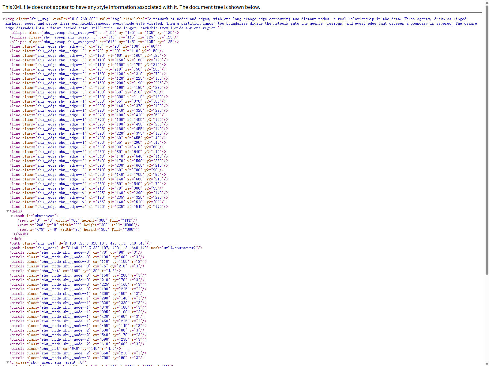
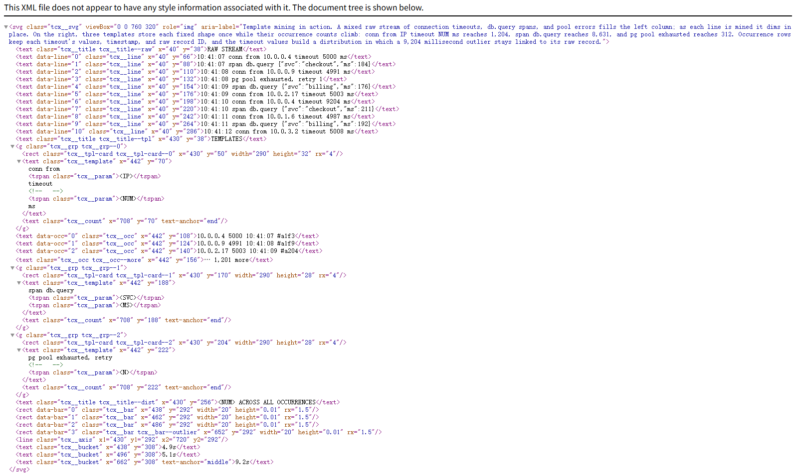

我们如何将 10 到 100 倍的遥测数据装进同一个上下文窗口，以及这为何改变了 Agent（智能体）能调试的问题。
在 Antimetal，我们的 Agent（智能体）每天通过搜索 PB 级遥测数据来调试生产故障，这些数据包括日志、trace（追踪）、事件和指标。在大型分布式系统中，单个 trace 可能包含数百万 token 的原始 JSON，甚至超出最大上下文窗口的容纳能力。
这种不匹配限制了我们的 Agent（智能体）有效调查几类故障的能力。但我们早期的一个洞察是，大部分数据量来自重复的结构。我们将这种结构挖掘成模板：每条日志、span 和事件的固定形状只存储一次，每次出现仅保留其变化的值、时间戳，以及指向原始记录的指针。这样可以在同一上下文窗口中容纳 10 到 100 倍的遥测数据，从而改善根因分析，降低每次事故的成本，并让 Agent（智能体）能够对数周的行为进行推理，而不是一个狭窄的事故窗口。
上下文窗口已从 4K 增长到超过 100 万 token，但由于 Transformer 中计算和内存的扩展方式，使用它们的成本也随之增长。更长的输入需要更多的 attention 计算和更大的 KV cache。理解力也会随着输入增长而下降。
通过多 Agent（智能体）架构扩展上下文窗口同样无法解决这个问题。拆分上下文会使数据之间的关系（如因果关系）更难恢复。假设一个故障被拆分到三个 Agent（智能体）中：原因可能落在其中一个 Agent（智能体）的分片中，而结果在另一个中。如果每个 Agent（智能体）只交换压缩后的摘要，因果关系可能会在分片边界处丢失。
采样会降低覆盖度。仅将可用遥测数据的样本传递给 Agent（智能体）可控制上下文大小，但可能会在 Agent 判断尾部事件是否重要之前就将其排除。因此，每次调查都始于一个不完整的视图。

聚合可以引导调查，但无法单独解释事件。计数、百分位数和 Top 值有助于引导 Agent，我们正是为此使用它们。然而，每次聚合都局限于预先选择的维度。p99 值可以识别异常值，但无法还原事件本身、事件周围发生了什么，也无法回答在定义分组时未预料到的问题。
基于模型的压缩会丢失语义细节。摘要器在得知调查将提出哪些问题之前就决定保留哪些细节。因此，它可能会省略最终解释事件的状态码或其他细节。
原始数据保留了细节，但仍难以大规模检查。原始文件和搜索工具使底层证据保持可访问，但每次读取只覆盖一个切片。Agent 必须在其拥有足够上下文并知道遥测的哪些部分重要之前，就决定要检查什么。
为了避免这些权衡取舍，我们需要一种更有效的遥测表示方法，它能在不丢失调查可能依赖的细节的情况下，将更多数据放入上下文窗口。
生产遥测在多个层面重复结构。日志语句保持相同的事件结构，而运行时值发生变化。固定文本记录发生了什么，变量记录地点、时间以及量级。在许多事件中，它们的分布展示了系统行为如何变化。
追踪也遵循同样的模式。操作名称和调用路径重复出现，而时间和属性各不相同。代码是系统行为的压缩描述，而遥测是它的高熵展开。
我们从 Drain 等日志模板挖掘器汲取灵感，这类工具将传入的日志行增量聚合成模板，用带类型的参数替换变化部分，同时保留固定文本。随后我们将该方法从日志消息推广到结构化遥测，涵盖 traces 和 events。我们设计了最终表示形式供 agent 查询。每次出现都保留其变化值、时间戳及对原始记录的引用。该表示还保留这些值在窗口内的分布方式。
agent 可以调整分组参数和时间范围，在宏观与详细视图之间切换。每个视图将模板、出现数据与延迟分布、服务边、trace 汇总及关联到 trace ID 的离群点相结合。

原始遥测仍可供检查。agent 找到相关模板、值或离群点后，即可返回原始记录。
在内部事故回放中，压缩视图改变了调查的形态。
当根因依赖于跨时间范围、服务、日志索引或 trace 的证据时，准确率提升最大。这些事故包括数小时内逐渐发展的内存泄漏、跨服务分布的重试行为、需要跨多个日志索引追踪的依赖故障，以及 trace 深处引入的延迟。
集中于单个应用的 bug 收益较小。当单个错误或 stack trace 就包含答案时，两种方法通常得出相同的诊断，压缩视图只会带来少量额外开销。
在一次回放中，原始 Agent（智能体）进行了 38 次工具调用，仅检查了 5% 的日志。它将若干短暂的错误突发描述为持续活动，并漏掉了一次额外的连接池关闭，该关闭在 300 毫秒内产生了 28 个错误。
使用压缩视图的 Agent（智能体）将完整日志窗口整合到单一视图，随后又用几次调用深入检查异常值背后的原始记录。它正确重建了时间线，并找到了那次关闭。
借助这种表示，我们 Agent（智能体）的上下文窗口可以容纳数周的遥测数据和系统行为，而不会降低诊断质量。
参考：https://antimetal.com/blog/scaling-understanding